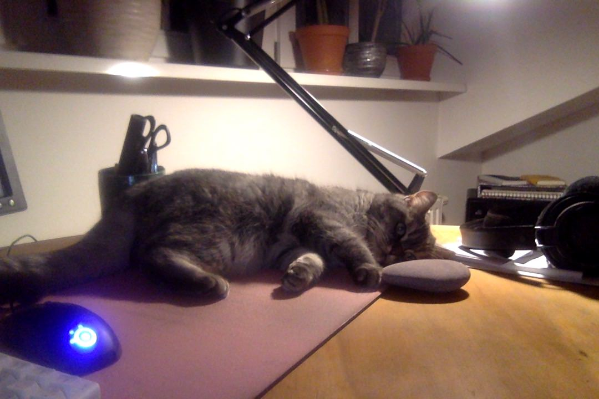
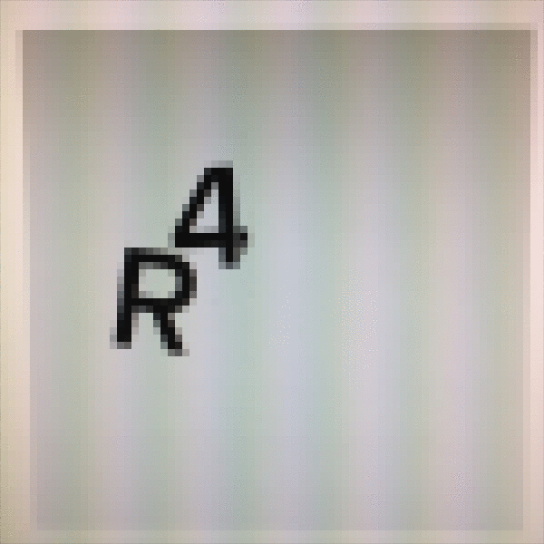

2018 recap
What’s happened to Radio4000 in the year 2018? Let’s see.

You can search the tracks in a radio and listen to just that selection.
More on https://blog.radio4000.com/posts/search-tracks-listen-to-results
Example: https://radio4000.com/lili-raid-over/tracks?search=%23beat.
You can connect a Discogs release to your youtube tracks. When you do it, we try to add both genre, label and year to the description of the track. This works nicely with the seach feature. Speaking of Discogs, we also made an alpha version of a “Explorer for Discogs”. Check it at https://explorer.radio4000.com (source)
And we made a command line tool (CLI) called r4 as as well! There’s a not-so-hidden dl feature you can try out. https://github.com/internet4000/r4
The settings pages got easier to use AND there’s a proper way to backup your radio
- https://blog.radio4000.com/posts/smarter-settings/
- https://blog.radio4000.com/posts/backup-your-radio4000-data
We passed the 4000 commit mark on the main website’s source code. Here’s a summary of all the changes from the latest release in 2017 to the latest in 2018: https://github.com/internet4000/radio4000/compare/5.5.3...5.17.0
The radio4000-player saw a big behind-the-scenes refactor. And is now able to play files in addition to YouTube videos. Let’s see what new ideas this brings. You do know that the player is a web component? It means you can easily use it on your own website. See all changes at https://github.com/internet4000/radio4000-player/compare/0.3.3...master
We worked on improving the developer experience:
- https://github.com/internet4000/radio4000-search-index (maybe upcoming, improved radio search)
- https://github.com/internet4000/radio4000-api (developer API)
- https://github.com/internet4000/radio4000-js-sdk (developer shortcuts for the API)
- https://github.com/internet4000/radio4000-blog (what you’re reading now)
And made a few fun experiments:
- https://github.com/internet4000/radio4000-mix (DJ mixer for Radio4000 channels)
- https://github.com/internet4000/trivia-radio4000 (A prototype quiz game)
- https://github.com/internet4000/explorer-discogs (A work in progress explorer for Discogs)
And of course hundreds of small tweaks and stuff all around. Join us on http://chat.radio4000.com.
